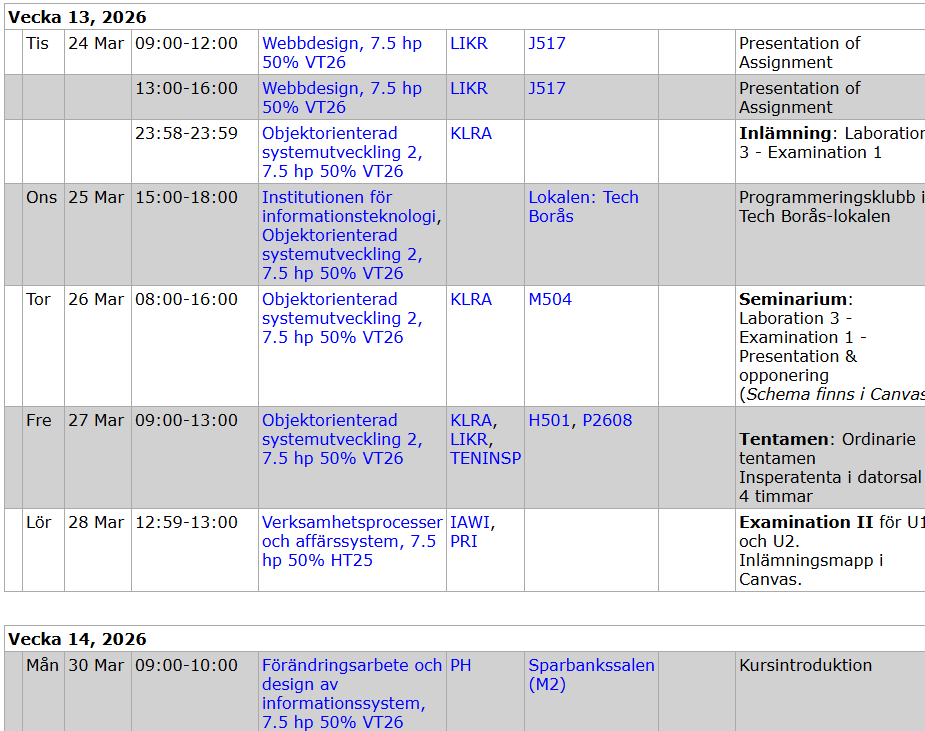

Schema
Se lektioner, tider och deadlines i en tydlig översikt.
UniNet hjälper studenter att hålla koll på schema, deadlines och resurser. Planera din vecka, boka studierum och samla allt kursmaterial på ett ställe.
UniNet är en plattform för studenter som vill få bättre struktur i sin studievardag. Här samlas viktiga funktioner på ett ställe så att det blir enklare att planera, hitta resurser och hålla koll på studierna.
Målet med UniNet är att minska stress och göra det lättare för studenter att få en tydlig överblick över schema, uppgifter och studiematerial.

Se lektioner, tider och deadlines i en tydlig översikt.
Planera uppgifter och studietid för att få bättre struktur.
Boka studierum enkelt för grupparbete eller eget plugg.
Samla kursmaterial, länkar och resurser på ett ställe.
Samla schema, uppgifter och resurser på ett och samma ställe.
Få bättre överblick över studierna och minska känslan av kaos.
Planera veckan tydligare och håll koll på viktiga deadlines.
Utforska UniNets funktioner och börja planera smartare.
Öppna planeraren